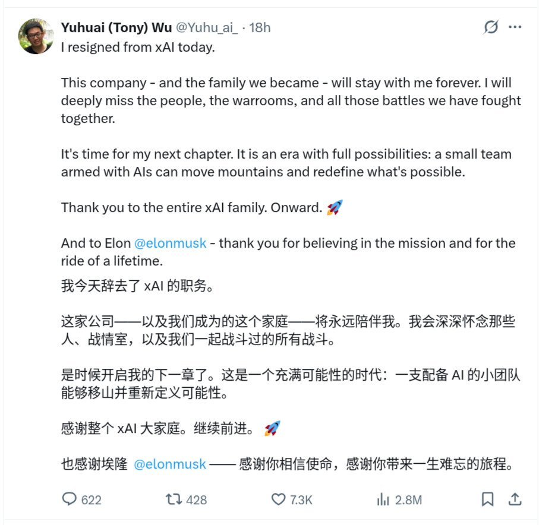
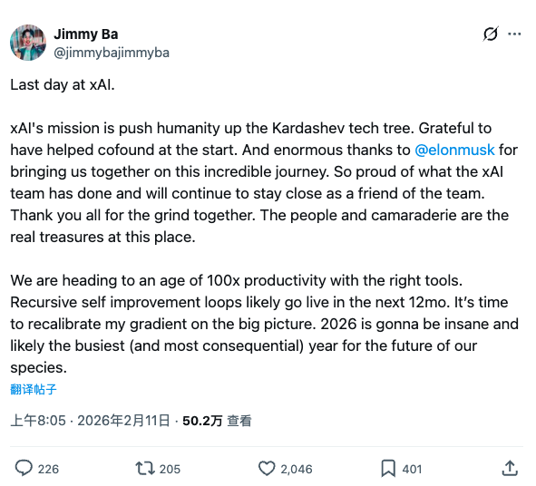
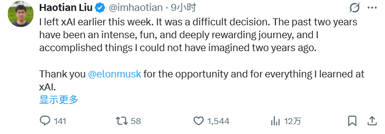
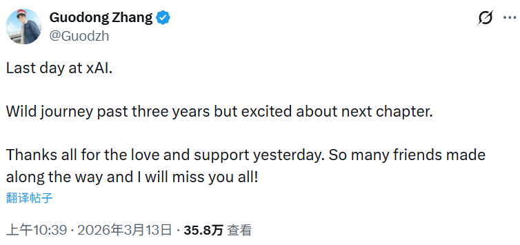

xAI团队近半创始成员离职，连负责人也都滚蛋了，十一罗汉只剩下俩人。也算是减压了，跟着一个总是吹牛的老板压力应该会很大，特别是老马把Grok4.20吹得震天响，但又恨铁不成钢。
虽然Grok的生图能力连Qwen都比不过，但在搜索赛道上确实是打出的差异化，我认为它是综合使用体验上最好的模型。刚好X垃圾搜索配合Grok的强力搜索，也算得上是互补了。
据小道消息透露，刚从Cursor挖了两个人，这是要搞Agent吗？那下一步就是X coding plan了（bushi），我对Grok的vibe能力仍有存疑，甚至不如Gemini靠谱。
有一说一Cursor的自研模型可以对标GLM-5，就是价格太贵了😂

虽然Grok的生图能力连Qwen都比不过，但在搜索赛道上确实是打出的差异化，我认为它是综合使用体验上最好的模型。刚好X垃圾搜索配合Grok的强力搜索，也算得上是互补了。
据小道消息透露，刚从Cursor挖了两个人，这是要搞Agent吗？那下一步就是X coding plan了（bushi），我对Grok的vibe能力仍有存疑，甚至不如Gemini靠谱。
有一说一Cursor的自研模型可以对标GLM-5，就是价格太贵了😂




Many talented people over the past few years were declined an offer or even an interview @xAI. My apologies.
@BarisAkis and I are going through the company interview history and reaching back out to promising candidates. https://t.co/tvhipa1lu1
@BarisAkis and I are going through the company interview history and reaching back out to promising candidates. https://t.co/tvhipa1lu1